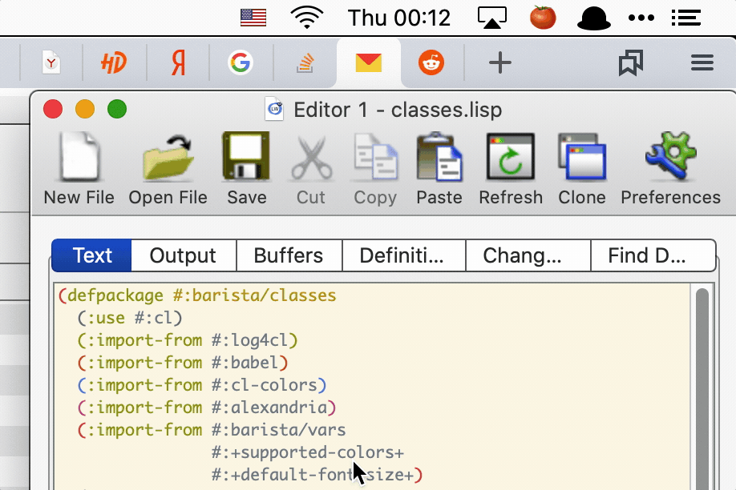

Barista — a macOS menu-bar application framework in Common Lisp.
BARISTA ASDF System Details
Description: mac
OSmenu-bar application framework in Common Lisp (SBCL/CFFI)Depends on: 40ants-logging, alexandria, bordeaux-threads, cffi, cl-colors, cxml, defmain, dexador, fmt, local-time, local-time-duration, log4cl, log4cl-extras, slynk, swank, trivial-main-thread, ubiquitous, uiop, zpng
Barista is a macOS menu-bar application framework written in Common Lisp.
It lets you display live information — text, emojis, icons, or dynamically
rendered images — in the macOS status bar.
Plugins run as threads inside a single Lisp process and communicate with
AppKit via Grand Central Dispatch (GCD). Each plugin gets its own
NSStatusItem with an icon and a dropdown menu.
This is similar to XBar and TextBar, but with key advantages:
Feature | XBar | Barista |
Plugin execution | Subprocess per refresh | Threads in one Lisp process |
State persistence | External storage | All in memory |
Plugin language | Any (mostly Bash) | Common Lisp |
Menu API | Text-based | Programmatic DSL + ObjC interop |
Debugging | None | Live REPL via SLYNK/SWANK |
Because plugins are Lisp code running in the same process, you can connect
your IDE (SLIME/SLY) to the running Barista instance and debug plugins
interactively.
Introduction

Barista turns the macOS menu bar into a live Lisp-powered dashboard.
A plugin is a Common Lisp class defined with the defplugin macro.
Each plugin can:
Display a text label (plain string, emoji, or attributed string with colors and fonts) as its status-bar icon.
Display an image icon (
PNGorICNSfile, or a dynamically renderedNSImage).Run background worker threads on a schedule (every N seconds, minutes, or hours).
Show a dropdown menu when the user clicks the icon — built either declaratively at compile time (
defmenu) or dynamically at runtime (build-menu).
How it works
Barista loads user plugins from ~/.config/barista/plugins/ at startup,
then initializes AppKit on the macOS main thread and enters the
[NSApp run] event loop. Worker threads update NSStatusItem objects via
GCD (dispatch_async on the main queue), ensuring all UI mutations happen
on the main thread.
Key features
In-memory state — no external files or databases; plugin state lives in
CLOSslots for the lifetime of the process.Programmatic menus — build menus with Lisp closures, not text formats. Items support callbacks, submenus, checkmarks, and opening
URLs.Dynamic icons — render images at runtime (e.g. bar-chart graphs) and update them from worker threads.
Live debugging — connect
SLIME/SLYto the running process and inspect or modify plugins on the fly.Configuration persistence — plugin enable/disable state is saved to
~/.config/barista/settings.lispand restored on launch.
Installation
From a pre-built release
Download the latest Barista-x.y.z.dmg from the
GitHub Releases page,
open it and drag Barista.app to your Applications folder.
Because the app is not signed with an Apple Developer certificate, macOS
will attach a quarantine flag to it when downloaded from the internet and
refuse to open it with a "Barista is damaged and can't be opened" message.
To remove the quarantine flag, run the following command in Terminal after
copying the app to /Applications:
xattr -dr com.apple.quarantine /Applications/Barista.appThen open the app normally.
Build from source
Barista uses Qlot for dependency management and Roswell for building.
git clone https://github.com/40ants/barista.git
cd barista
qlot install
./build.shThis produces dist/Barista.app. To also copy it to /Applications:
INSTALL=1 ./build.shRunning with a REPL
You can connect your IDE to a running Barista instance for live debugging:
# From the built executable:
./dist/Barista.app/Contents/MacOS/barista --slynk
./dist/Barista.app/Contents/MacOS/barista --slynk --port 4005
# From source via Roswell:
qlot exec ros app.ros --slynkConnect from SLY:
M-x sly-connect RET 127.0.0.1 RET 5007 RETSLIME is also supported via the --swank flag. Default port is 5007.
Logs are written to /tmp/barista.log.
Available Plugins
Barista ships with several bundled plugins. Enable or disable them from the menu-bar icon → Plugins submenu (visible when no other plugin is active, or via Alt-click on any plugin icon).
Pomodoro
A Pomodoro Technique
timer. Shows a tomato emoji (🍅) when idle and a countdown when running.
Choose 5, 15, or 25 minute intervals from the dropdown menu. The countdown
turns red in the last 3 minutes. A macOS notification fires when the timer
starts and stops.
Clipboard
A clipboard history manager. Polls the system pasteboard every second and keeps the last 10 copied items. Click the icon (📋) to see the history; click any item to copy it back to the clipboard. Includes a "Clear history" option.
Currency
Displays USD and EUR exchange rates from the
Central Bank of Russia daily XML feed. The status-bar
label flips between $ and € rates every 5 seconds. Rates are fetched on
startup and refreshed every 30 minutes. The dropdown menu shows both rates
side by side.
System Monitor
Shows real-time CPU, GPU, and memory usage as a colored bar-chart icon in
the status bar (rendered dynamically as a PNG). The dropdown menu displays
numeric percentages for each metric. Colors change from green to orange to
red as usage increases. Metrics are read directly from Mach/IOKit APIs via
CFFI — no external commands.
Community Plugins
barista-zai-quota — Shows Z.AI Coding Plan token quota (5-hour and weekly) as a colored bar-chart icon.
Writing Custom Plugins
Plugins live as .lisp files in ~/.config/barista/plugins/. Each file is
loaded at startup before AppKit initialises.
Minimal text plugin
The simplest plugin shows a text label and updates it on a schedule:
(defpackage #:my-plugins/clock
(:use #:cl)
(:import-from #:barista/plugin
#:defplugin
#:get-title)
(:import-from #:barista/vars
#:*plugin*))
(in-package #:my-plugins/clock)
(defplugin clock ()
(:title "🕐")
(:every :minute
(setf (get-title *plugin*)
(local-time:format-timestring nil (local-time:now)
:format '(:hour ":" (:min 2))))))defplugin options
The defplugin macro accepts the following options:
(:title EXPR)— initial menu-bar label. May be a plain string, an emoji, or anNSAttributedStringbuilt withmake-attributed-string/join-attributed-string.(:image PATH &key size template)— display aPNGorICNSfile as the status-bar icon.:sizescales the image (default 18).:template tmarks it as a template image so macOSadapts it to dark/light mode. Takes precedence over:title.(:menu SYMBOL)— name of adefmenuform to display on click.(:every PERIOD FORMS…)— starts a background worker thread.PERIODis a keyword (:second,:minute,:hour) or a list like(15 :seconds).
You can define custom slots on the plugin class by listing them after the
plugin name, just like defclass:
(defplugin my-plugin
((counter :initform 0 :accessor get-counter))
(:title "0")
(:every :second
(incf (get-counter *plugin*))
(setf (get-title *plugin*)
(format nil "~D" (get-counter *plugin*)))))Image icon plugin
(defpackage #:my-plugins/status
(:use #:cl)
(:import-from #:barista/plugin
#:defplugin
#:get-image)
(:import-from #:barista/vars
#:*plugin*))
(in-package #:my-plugins/status)
;; Colour icon — pixels render as-is (default).
(defplugin status-colour ()
(:image #p"~/.config/barista/icons/my-icon.png" :size 18))
;; Monochrome/symbolic icon — macOS recolours it for dark/light mode.
(defplugin status-mono ()
(:image #p"~/.config/barista/icons/mono-icon.png" :size 18 :template t))You can also update the icon at runtime from a worker thread:
(:every (30 :seconds)
(let ((icon-path (render-current-state-to-png)))
(setf (get-image *plugin*) icon-path)))setf get-image accepts a pathname, a namestring, or an NSImage pointer.
Menus
There are two ways to define a dropdown menu.
Declarative — defmenu (compile-time, static structure):
(defmenu start
(("Start 5 min" :callback (lambda () (start 5)))
("Start 15 min" :callback (lambda () (start 15)))
("---")
("Help" :url "https://example.com")))Item spec: (title &key callback submenu url state disabled).
* "---" adds a separator.
* :callback is a zero-argument function called on click.
* :submenu is a symbol naming another defmenu.
* :url opens a URL in the default browser.
* :state t shows a native checkmark.
* :disabled t greys out the item.
Imperative — build-menu / add-item (runtime, dynamic structure):
(defun build-my-menu (plugin)
(build-menu
(dolist (item (get-items plugin))
(add-item item :callback (make-item-callback item)))
(add-separator)
(add-item "Clear" :callback (lambda () (clear plugin)))))Use build-menu when the menu structure depends on runtime data.
Dynamic menu wiring
When a plugin needs a dynamic menu (built at runtime), wire up the
menu-thunk on the first worker tick instead of using the :menu option:
(defplugin my-plugin
((menu-ready :initform nil :accessor get-menu-ready))
(:title "Data")
(:every (5 :seconds)
(unless (get-menu-ready *plugin*)
(setf (barista/classes:get-menu-thunk
(barista/plugin:get-status-item *plugin*))
(let ((p *plugin*))
(lambda () (build-dynamic-menu p))))
(setf (get-menu-ready *plugin*) t))
(update-data *plugin*)))This pattern is used by the clipboard, currency, and system-monitor plugins.
The plugin variable
barista/vars:*plugin* is the central context variable. It is bound inside
worker threads, menu thunks, and menu callbacks automatically. Always use it
to access the current plugin instance:
(setf (get-title *plugin*) "Updated!")
(setf (get-image *plugin*) #p"/path/to/icon.png")Switching menus at runtime
Use replace-menu to swap the dropdown menu of a running plugin:
(barista/plugin:replace-menu start-menu-symbol stop-menu-symbol)This replaces the menu-thunk on the status item.
Enabling plugins
On first launch Barista shows a system icon in the menu bar. Click it and
choose Plugins to enable the plugins you want. The selection is saved
to ~/.config/barista/settings.lisp and restored on every subsequent launch.
You can also Alt-click any plugin icon to access a maintenance menu with options to restart all plugins or quit Barista.
API
BARISTA/CLASSES
Classes
STATUS-ITEM
Wraps an NSStatusItem for one Barista plugin.
Readers
Integer pointer address of the NSStatusBarButton,
captured at initialisation time and used for click-table keying and cleanup.
Storing it avoids calling (send ns-item "button") on a potentially-released
object during hide.
Nullary function that builds and returns an NSMenu pointer.
Raw CFFI pointer to the AppKit NSStatusItem.
When T, this is the system plugin item. The click handler skips appending the Settings/Quit section to its menu because it already is the Settings menu.
Accessors
Integer pointer address of the NSStatusBarButton,
captured at initialisation time and used for click-table keying and cleanup.
Storing it avoids calling (send ns-item "button") on a potentially-released
object during hide.
Nullary function that builds and returns an NSMenu pointer.
Raw CFFI pointer to the AppKit NSStatusItem.
When T, this is the system plugin item. The click handler skips appending the Settings/Quit section to its menu because it already is the Settings menu.
Generics
Return the current status-bar icon of PLUGIN.
Functions
Return a compile-time form that evaluates to an NSString or NSAttributedString.
Called by defmenu/build-menu macros to process user-supplied title values.
Concatenate PARTS into a single NSMutableAttributedString.
Each part may be a plain string, a (text :color ... :font ... :size ...) list,
or an existing NSAttributedString pointer.
Create an NSAttributedString from TEXT with optional FONT, COLOR, and SIZE.
Return the standard menu font at SIZE points.
Return an NSFont for NAME at SIZE points, or NIL if the font is unknown.
Load an NSImage from PATH (pathname or string).
PATH may be a CL pathname or a namestring.
Keyword arguments:
SIZE -- when non-NIL, a number; calls setSize: with SIZE x SIZE points.
TEMPLATE -- when T, marks the image as a template image so macOS adapts
it to the current appearance (dark/light mode). Use T only
for monochrome/symbolic icons. For colour images leave NIL
(the default) so pixels render as-is.
Returns the NSImage pointer, or NIL if the file could not be loaded.
BARISTA/CONFIG
Functions
Return a list of plugin name keywords that are enabled in the config. Only keys explicitly set to T are included.
Return T if PLUGIN-NAME is enabled in the configuration.
Defaults to NIL (disabled) when no value is stored -- this ensures a
clean first-run experience where the system plugin is shown instead.
Load Barista configuration from disk. If the file does not exist (first launch), bootstraps an empty storage and points storage-pathname at the target path so that subsequent (setf (value ...)) calls persist to the correct file.
Note: when handler-case catches no-storage-file, ubiquitous leaves
storage-pathname pointing at its default global path and does NOT set
it to the requested path. We must set both storage-pathname and
storage explicitly to make offload work correctly later.
Persist the enabled/disabled state for PLUGIN-NAME.
ubiquitous automatically writes to disk after each (setf value).
BARISTA/MAIN
Functions
Load all user plugin files from ~/.config/barista/plugins/.
Start the Barista menu-bar application.
Loads user plugins, initialises AppKit on macOS thread 0 via
trivial-main-thread, and enters the AppKit event loop (never returns
normally).
Instantiate and start all registered plugins regardless of config.
Must be called on the AppKit main thread.
NOTE: Prefer start-enabled-plugins for normal startup.
Stop all currently running plugins.
BARISTA/MENU
Generics
Remove ITEM from the status bar and release the NSStatusItem.
Functions
Add an item to the menu currently being built by build-menu.
Must be called inside a build-menu body.
STATE: when T sets the native macOS checkmark (NSControlStateValueOn).
DISABLED: when T greys out the item and makes it non-interactive.
Add a native NSMenuItem separator to the menu currently being built.
Must be called inside a build-menu body.
Create the AppKit NSStatusItem for the barista/classes:status-item ITEM.
Must be called on the AppKit main thread.
Like initialize-status-item but uses an image file instead of a text title.
IMAGE-PATH is a CL pathname or namestring to a PNG/ICNS file.
SIZE -- desired icon size in points (default 18); passed to make-ns-image.
TEMPLATE -- when T, marks the image as a template (monochrome/symbolic icons
that should adapt to dark/light mode). Leave NIL (default) for
colour images so pixels are rendered as-is.
Return an NSMenu pointer for NAME-OR-MENU.
NAME-OR-MENU may be a symbol (looked up in menu-constructors or as a
function), or an already-built NSMenu CFFI pointer.
Macros
Evaluate BODY with current-menu bound to a fresh NSMenu, then return it.
Define a named menu constructor and register it in menu-constructors.
Example: (defmenu my-menu (("Item one" :callback #'handler) ("Item two" :url "https://example.com")))
BARISTA/PLUGIN
Generics
Return the current status-bar icon of PLUGIN.
Return the menu-thunk of PLUGIN's status item.
Return the barista/classes:status-item wrapper of PLUGIN.
Return the current status-bar label of PLUGIN.
Stop PLUGIN, dispatching to the AppKit main thread via GCD.
Functions
Start only the plugins that are enabled in the configuration.
Must be called directly on the AppKit main thread (not via GCD) so that
all plugins are registered in running-plugins before the caller checks
visibility (e.g. ensure-system-plugin).
Start CLASS-NAME, dispatching to the AppKit main thread via GCD.
Safe to call from any thread. Returns immediately.
Macros
Define a Barista plugin class with background workers and a menu-bar item.
Options:
(:title EXPR) -- initial status-bar title (text or attributed)
(:image PATH &key size template) -- status-bar icon from an image file.
PATH is a pathname or string evaluated
at plugin start time.
SIZE (default 18) scales the icon.
TEMPLATE T for monochrome/symbolic icons
that should adapt to dark/light mode;
leave NIL (default) for colour images.
(:menu SYMBOL) -- name of a defmenu to show on click
(:every PERIOD FORMS) -- background worker: evaluate FORMS every PERIOD
:title and :image are mutually exclusive; :image takes precedence when both are supplied.
Run BODY with barista/vars:*plugin* bound to the named running plugin.
Useful for interactive debugging.
BARISTA/SYSTEM-PLUGIN
Functions
Call after start-enabled-plugins to show the system plugin when needed. Must be called on the AppKit main thread.
Hide the system plugin status item from the menu bar. No-op if not visible.
Build the Settings > Plugins submenu dynamically. Each item shows the plugin name with a native checkmark if currently enabled.
Show the system plugin status item in the menu bar. Creates it on first call; no-op if already visible.
Show the system plugin if no user plugins are running; hide it otherwise. Must be called from the AppKit main thread (via on-main-thread when in doubt).
BARISTA/UTILS
Functions
Open URL in the default browser via a background thread.
Macros
Schedule ACTIONS to run on the AppKit main thread via GCD.
Returns immediately (fire-and-forget). Safe to call from any thread.
BARISTA/VARS
Variables
If True, then debugger will be invoked on any error in the periodic threads.
Current plugin.
Default font size in points for status-bar text.
A list of supported color names.